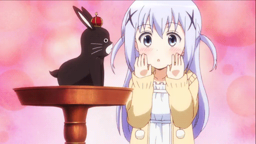

₍ᐢᐢ₎ Gênero: Comédia
Episódios: 12
Autor: Koi
Ano de lançamento: 2014 ₍ᐢᐢ₎
Acompanhamos a jornada da adorável jovem Kokoa Hoto,
que tem uma grande facilidade em fazer novas amizades.
Kokoa vai se mudar para outra cidade com o objetivo de
ingressar no ensino médio e logo vai fazer amizade com Chino Kafuu,
a neta do dono de um café chamado Rabbit House.
Chino está sempre acompanhada de um coelhinho falante chamado Tippy.
Kokoa vai começar a trabalhar no café e fazer mais amizades
com outras garotas adoráveis e fofas.

Kokoa Hoto é uma garota positiva e energética
que faz amizade com qualquer pessoa em apenas três segundos.
Depois de se mudar para a casa da família Kafuu para cursar o
ensino médio longe de casa, ela imediatamente faz amizade com
a neta tímida e precoce do fundador do café Rabbit House,
Chino Kafuu, que é frequentemente vista com o coelho falante, Tippy, na cabeça.

Depois de começar a trabalhar como garçonete em
troca de hospedagem e alimentação, Kokoa também
faz amizade com outra funcionária de meio período,
Rize Tedeza, que tem comportamento incomum e
capacidades físicas significativas devido à sua
educação militar; Chiya Ujimatsu, uma garçonete de
um café rival que faz tudo no seu próprio ritmo;
e Sharo Kirima, outra garçonete de um café diferente
que tem o ar de uma nobre, apesar de ser pobre.
Nesse vídeo você vai poder conhecer um pouco dessa fofura!
Você pode assistir no Chunchyroll. ദ്ദി（• ˕ •マ.ᐟ
"
✰ かわいいアニメ ✰